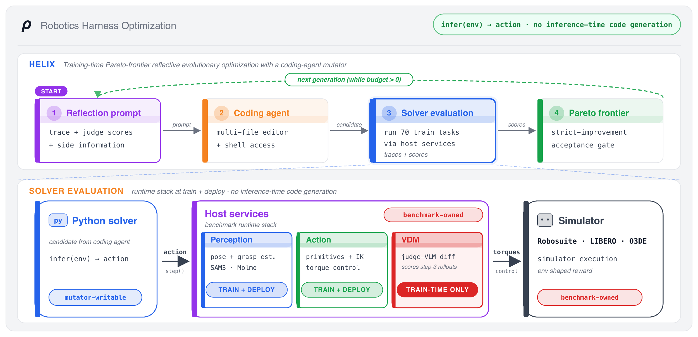

The idea
Let a coding agent write and rewrite the robot's code until it works.
RHO (Robotics Harness Optimization) hands the job to a tool-using coding agent and lets it practice in a simulator through reflective evolutionary search: it edits, runs, and debugs whole programs against the robot's reward, keeping the variants that help. The end product is one self-contained codebase, ordinary code (routing, geometry, retries, checks) wrapped around learned perception and grasping. Because the final product is just code, you can read it, debug it, and reuse it. (For experts: this relocates the model's expensive search out of deployment and into a one-time training phase, so what ships is a frozen policy.)

Run
A candidate repository runs in the simulator, earning a reward plus detailed feedback on what went wrong.
Rewrite
The repository and that feedback go to the coding agent, which mutates many files at once.
Keep the winners
A child is kept only if it beats its parent on a paired minibatch of trials (the acceptance gate).
Build a library
The best variants are retained as a diverse library, a Pareto frontier over task coverage, not a single greedy chain.
RHO improves the whole codebase at once, not one prompt or function at a time. A failed grasp usually needs several coordinated fixes together: how the object's position is estimated, how a motion is tuned, how retries work, how the words of a task map to geometry. Rewriting the whole codebase changes all of them in one move.

30% 70%
A single coding agent (single-turn), no matter how long it is allowed to think, tops out at just 30.0% on the held-out tasks. The reflective evolutionary loop is what lifts the same model and tools to 70%. The loop is the method, not just the agent.